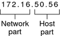
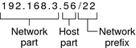

|
|||||||||||||||||||||||||||||||||||||||||||||||||||||||||||||||||||||||||||
|
1. Solaris TCPIP Protocol Suite (Overview) 2. Planning an IPv4 Addressing Scheme (Tasks Determining the Network Hardware Deciding on an IP Addressing Format for Your Network Obtaining Your Network's IP Number Naming Entities on Your Network Planning for Routers on Your Network 3. Planning an IPv6 Addressing Scheme (Overview) 4. Planning an IPv6 Network (Tasks) 5. Configuring TCP/IP Network Services and IPv4 Addressing (Tasks) 6. Administering Network Interfaces (Tasks) 7. Enabling IPv6 on a Network (Tasks) 8. Administering a TCP/IP Network (Tasks) 9. Troubleshooting Network Problems (Tasks) 10. TCP/IP and IPv4 in Depth (Reference) 12. About Solaris DHCP (Overview) 13. Planning for DHCP Service (Tasks) 14. Configuring the DHCP Service (Tasks) 15. Administering DHCP (Tasks) 16. Configuring and Administering DHCP Clients 17. Troubleshooting DHCP (Reference) 18. DHCP Commands and Files (Reference) 19. IP Security Architecture (Overview) 21. IP Security Architecture (Reference) 22. Internet Key Exchange (Overview) 24. Internet Key Exchange (Reference) 25. Solaris IP Filter (Overview) 28. Administering Mobile IP (Tasks) 29. Mobile IP Files and Commands (Reference) 30. Introducing IPMP (Overview) 31. Administering IPMP (Tasks) Part VI IP Quality of Service (IPQoS) 32. Introducing IPQoS (Overview) 33. Planning for an IPQoS-Enabled Network (Tasks) 34. Creating the IPQoS Configuration File (Tasks) 35. Starting and Maintaining IPQoS (Tasks) 36. Using Flow Accounting and Statistics Gathering (Tasks) |
Designing an IPv4 Addressing SchemeNote - For IPv6 address planning information, refer to Preparing an IPv6 Addressing Plan. This section gives an overview IPv4 addressing to aid you in designing an IPv4 addressing plan. For information on IPv6 addresses, see IPv6 Addressing Overview. For information on DHCP addresses, see Chapter 12, About Solaris DHCP (Overview). Each IPv4-based network must have the following:
The IPv4 address is a 32-bit number that uniquely identifies a network interface on a system, as explained in How IP Addresses Apply to Network Interfaces. An IPv4 address is written in decimal digits, divided into four 8-bit fields that are separated by periods. Each 8-bit field represents a byte of the IPv4 address. This form of representing the bytes of an IPv4 address is often referred to as the dotted-decimal format. The following figure shows the component parts of an IPv4 address, 172.16.50.56. Figure 2-1 IPv4 Address Format
If you plan to subnet a class-based IPv4 network, you need to define a subnet mask, or netmask, as explained in netmasks Database. The next example shows of the CIDR format address 192.168.3.56/22 Figure 2-2 CIDR Format IPv4 Address
A Solaris-based network can combine standard IPv4 addresses, CIDR format IPv4 addresses, DHCP addresses, IPv6 addresses, and private IPv4 addresses. Designing Your IPv4 Addressing SchemeThis section describes the classes into which standard IPv4 address are organized. Though the IANA no longer gives out class-based network numbers, these network numbers are still in use on many networks. You might need to administer the address space for a site with class-based network numbers. For a complete discussion of IPv4 network classes, refer to Network Classes. The following table shows the division of the standard IPv4 address into network and host address spaces. For each class, “Range” specifies the range of decimal values for the first byte of the network number. “Network Address” indicates the number of bytes of the IPv4 address that are dedicated to the network part of the address. Each byte is represented by xxx. “Host Address” indicates the number of bytes that are dedicated to the host part of the address. For example, in a class A network address, the first byte is dedicated to the network, and the last three bytes are dedicated to the host. The opposite designation is true for a class C network. Table 2-1 Division of the IPv4 Classes
The numbers in the first byte of the IPv4 address define whether the network is class A, B, or C. The remaining three bytes have a range from 0–255. The two numbers 0 and 255 are reserved. You can assign the numbers 1–254 to each byte, depending on the network class that was assigned to your network by the IANA. The following table shows which bytes of the IPv4 address are assigned to you. The table also shows the range of numbers within each byte that are available for you to assign to your hosts. Table 2-2 Range of Available IPv4 Classes
IPv4 Subnet NumberLocal networks with large numbers of hosts are sometimes divided into subnets. If you divide your IPv4 network number into subnets, you need to assign a network identifier to each subnet. You can maximize the efficiency of the IPv4 address space by using some of the bits from the host part of the IPv4 address as a network identifier. When used as a network identifier, the specified part of the address becomes the subnet number. You create a subnet number by using a netmask, which is a bitmask that selects the network and subnet parts of an IPv4 address. Refer to Creating the Network Mask for IPv4 Addresses for details. Designing Your CIDR IPv4 Addressing SchemeThe network classes that originally constituted IPv4 are no longer in use on the global Internet. Today, the IANA distributes classless CIDR format addresses to its registries around the world. Any IPv4 address that you obtain from an ISP is in CIDR format, as shown in Figure 2-2. The network prefix of the CIDR address indicates how many IPv4 addresses are available for hosts on your network. Note that these host addresses are assigned to interfaces on a host. If a host has more than one physical interface, you need to assign a host address for every physical interface that is in use. The network prefix of a CIDR address also defines the length of the subnet mask. Most Solaris 10 commands recognize the CIDR prefix designation of a network's subnet mask. However, the Solaris installation program and /etc/netmask file require you to set the subnet mask by using dotted decimal representation. In these two cases, use the dotted decimal representation of the CIDR network prefix, as shown in the next table. Table 2-3 CIDR Prefixes and Their Decimal Equivalent
For more information on CIDR addresses, refer to the following sources:
Using Private IPv4 AddressesThe IANA has reserved three blocks of IPv4 addresses for companies to use on their private networks. These addresses are defined in RFC 1918, Address Allocation for Private Internets. You can use these private addresses, also known as 1918 addresses, for systems on local networks within a corporate intranet. However, private addresses are not valid on the Internet. Do not use them on systems that must communicate outside the local network.
How IP Addresses Apply to Network InterfacesTo connect to the network, a system must have at least one physical network interface. Each network interface must have its own unique IP address. During Solaris installation, you must supply the IP address for the first interface that the installation program finds. Usually that interface has the name device-name0, for example eri0 or hme0. This interface is considered the primary network interface. If you add a second network interface to a host, that interface also must have its own unique IP address. When you add the second network interface, the host then becomes multihomed. By contrast, when you add a second network interface to a host and enable IP forwarding, that host becomes a router. See Configuring an IPv4 Router for an explanation. Each network interface has a device name, a device driver, and an associated device file in the /devices directory. The network interface might have a device name such as eri or smc0, which are device names for two commonly used Ethernet interfaces. For information and tasks related to interfaces, refer to Chapter 6, Administering Network Interfaces (Tasks). Note - This book assumes that your systems have Ethernet network interfaces. If you plan to use different network media, refer to the manuals that come with the network interface for configuration information. |
||||||||||||||||||||||||||||||||||||||||||||||||||||||||||||||||||||||||||
|